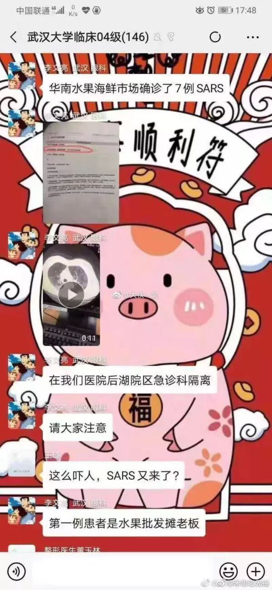
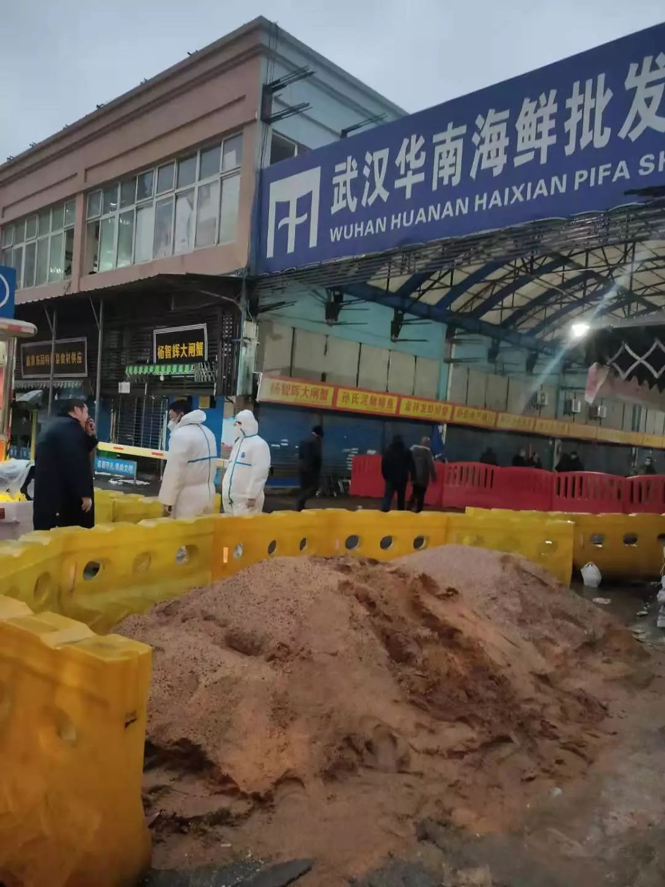
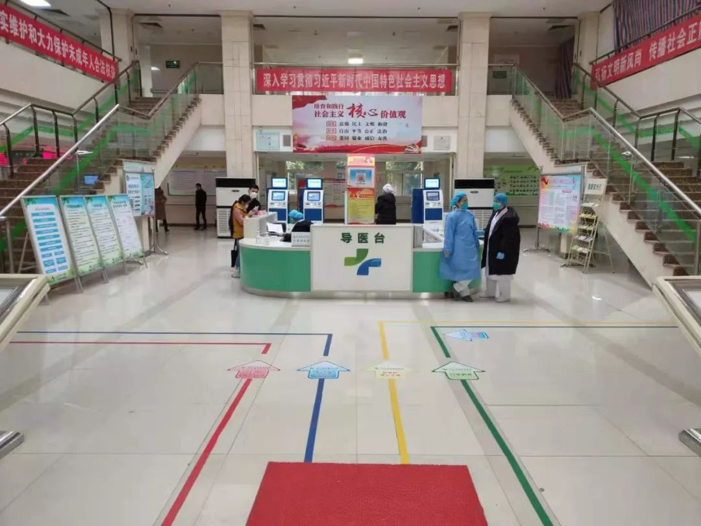
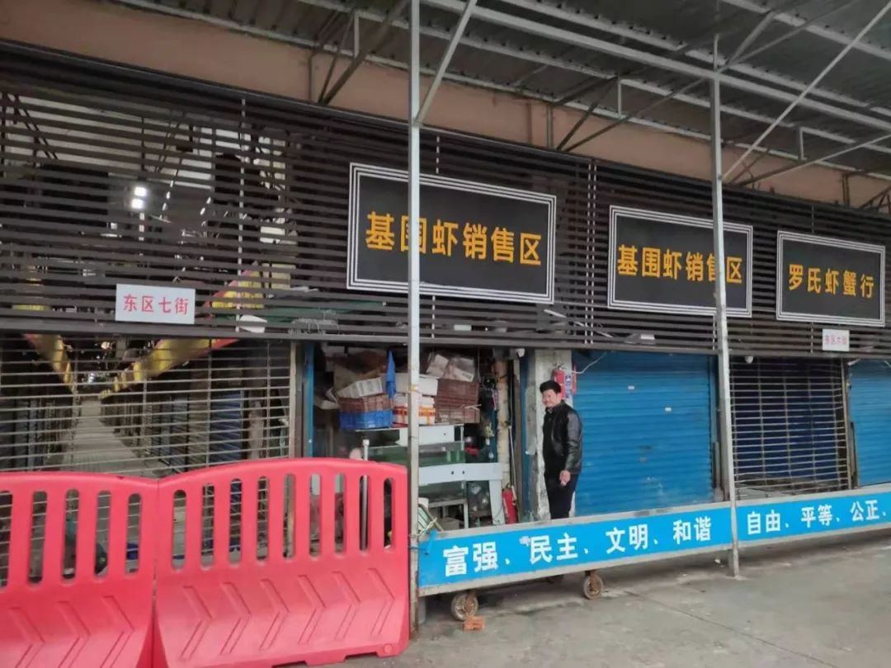
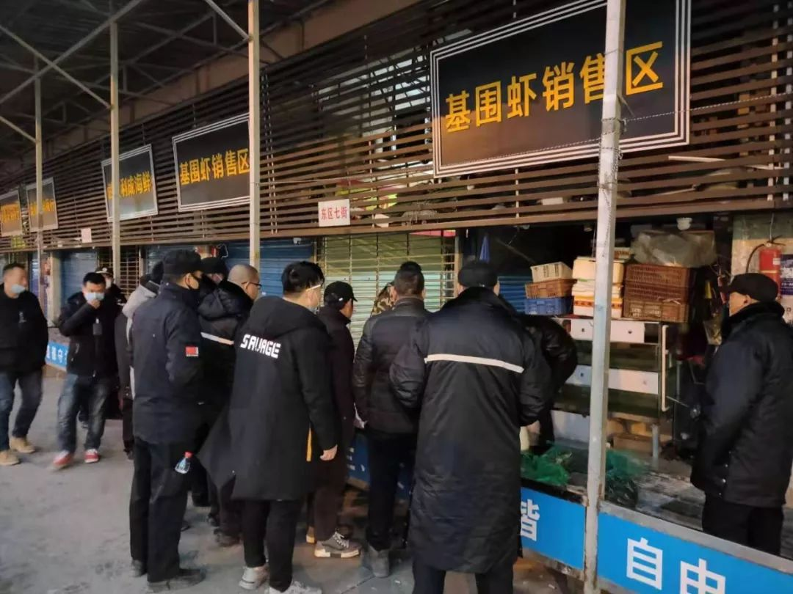
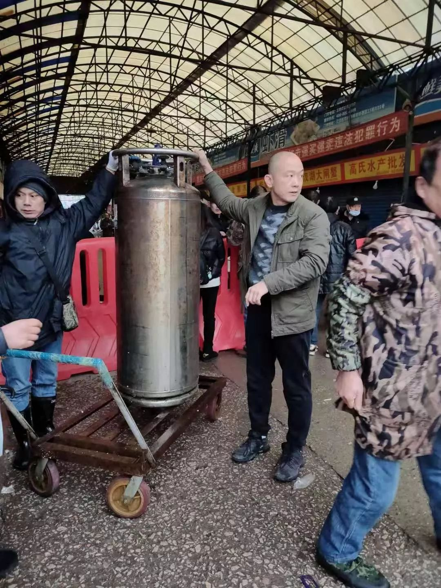

一财现场直击武汉肺炎事发海鲜批发市场，商户仍在正常营业
原文链接 备份链接 第一财经 2019-12-31 13:39:50 听新闻 [* 一财区域 ](/author/100000392.html) 华南海鲜市场是武汉最大的海鲜批发市场。据多方接受采访的人士称，该市场昨晚进行了例行消 …

这一次的休市，几乎要使华南市场干货店老板曾嘉欣找不到生活的信念了。2019 年 11 月，因为一家卖辣椒等干货调料的商铺起火，曾嘉欣的商铺，以及铺子里 69 万的干货曾被付之一炬。借了贷款，用半个月的时间把商铺重新装修，12 月，商铺重新开业，营业额逐渐回升。未成想，一场病毒，又把她刚有起色的生意，打回原形。
窸窸窣窣搜寻一番，基围虾专营店老板赵爱民从店里带出的有一把电子秤、一把蓝色长伞、两双雨靴、一段胶皮水管、几叠空塑料货框、蛇皮袋，还有一张有年头的木桌子。带出如此细碎的老物件，赵爱民不得不承认，他对短期内复市已经不抱希望。
就读于中国地质大学的吴梦，选择放弃观看跨年灯光秀。不过，她的「胆怯」遭到不少朋友嘲笑。基于地域的一种情愫，卷裹着类似的争议，甚至互骂，流传在社交平台。每当看见诸如「我就是武汉人，啥事没有」「戴啥口罩，该吃吃该玩玩」等评论时，吴梦就特别「窝火」。
地处漩涡附近，华南市场周边居民，格外谨慎。老人们已经减少或取消了经常下楼遛弯的习惯。改由晚上结伴乘坐公车，到 3 至 4 站地外，购买生活所需。
在距华南市场不到 2 公里的汉口火车站，1 月 10 日，春运的第一天，人流密集，在黑车和旅店的拉客声中，少有人佩戴口罩防护。
……

武汉SARS「复燃」流言的源头，
网络上流传的截图
这一次，流言的源头来自一位「疑似」医护人员。
2019 年 12 月下旬，有自称武汉市中心医院眼科医生的人，在网上曝出某地博奥医学检验所的检测报告，指武汉已确诊 SARS。该人在取名为「武汉大学临床 04 级」的微信群爆料指，上述报告就是武汉华南海鲜市场确诊 SARS 的检测结果，并披露第一例患者是水果批发摊老板，在自己所在医院急诊科隔离。
当小道消息派生出的 SARS「复燃」的惊恐，流传于武汉城间时，张阳的妻子，正在 70 公里外的孝感，妻子反复叮嘱张阳少出门。在随后的官方通报中，武汉汉口华南海鲜市场（下称「华南市场」）被频频提起。
这里是华中地区最大的海鲜市场，有个头比人头还大的阿拉斯加帝王蟹、一只得上千元；也有武汉夜市最夯的花甲，多已吐沙干净，批发价不到五元一斤。丰俭由人，多少武汉人的菜谱受此影响。
一街之外，就是汉口火车站，坐落于市区黄金地段的华南市场，是这座江城餐饮业的配送中心。除了给各酒家饭店批发供应，一些公司的年终尾牙、团建聚餐亦会来这采购。在周围林立的高楼中，这低矮、杂乱的旧市场很是不搭。一条新华路，将华南市场分为东、西区，东西走向的二十余条街，将 1000 余经营户分隔开来。
对于传言，李翰昭起初并不在意，他所开的水产店，位于西区 15 街。2019 年 12 月 31 日这一天，执法人员说有疫情，这让他隐隐不安。他破例没有早睡，而是来到了江滩公园，与 20 万人一道，和长江灯光秀一起倒数跨年。2019 年的最后 10 秒钟，两江四岸的高楼上，同步亮起新年 10 秒倒计时。这一刻，他对新年许下愿望。
一如往常，2020 年 1 月 1 日凌晨四五点钟，新年的曙光未显，李翰昭就已开店营业。让他措手不及的是，八九点时，一辆辆公安、城管执法、市场监管的公务用车，运来大批执法人员。商户们被命令拉下闸门速离，市场只能出、不能进。
当他们疑惑地站在拉起的警戒线外眺望时，令李翰昭不安的一幕出现，鲜红色的警戒栏被堆到路口，随后，一些街市的入口铁闸，被徐徐拉下，冷清的街道里，只有穿着白色防化服的检疫人员的背影。

华南海鲜批发市场门口穿着白色防化服的检疫人员
「我以为是暂时性的，去外头等一会，就放我进来。」李翰昭的想法很快被击碎了。有人四处张贴《关于休市整治的公告》，公告显示，华南市场实行休市，进行环境卫生整治，没有明确开市时间。而一份落款为「省、市、区疾控中心联合调查组」的报告写道，「（华南市场）西区卫生环境很差，销售垃圾随处堆放，地面潮湿，通风很差……为病例发生的客观原因」。
有少数商户执拗地不愿撤离，宁可让人透过警戒线送饭，也不离开自家生意。但把住出入口的执法人员，板着脸，已不再允许携带货物离开市场。
人的意志，在大势面前显得颇为无力。随着华南市场的休市通告被广而告之，与之关系密切的不明原因病毒性肺炎（下称「不明肺炎」），进入公众视野。
「已排除SARS和MERS等呼吸道病原。」在 2020 年 1 月 5 日的通报中，武汉市卫健委第一次明确将不明肺炎与 SARS 划清关系。通告指出，不明肺炎诊断患者的数量攀升到 59 例，这是连日来的病例最高值。病例最早发病时间为 2019 年 12 月 12 日。部分患者为华南市场经营户。

病毒

图片来源：站酷海洛
69 岁的郑梓昱便是这最早发病的病例之一。为湖北省粤菜帮餐饮管理有限公司服务的他，常年在华南市场采购，将货发往荆州一家专门经营海鲜的酒店，至今已 15 年。
据郑梓昱从荆州赶来的家属对偶尔治愈介绍，2019 年 12 月 12 日，他开始发烧，在诊所输液后，就是不退烧。随后，在离华南市场最近的武汉优抚医院检查后，因优抚医院以精神专科为主，郑梓昱被建议转院至另一家二级甲等医院，距离华南市场 1.5 公里的武汉市红十字会医院。在该院诊断为肺部感染，住了七天院，烧还是退不下来。
三甲医院，成了郑梓昱分级诊疗接力的下一棒。12 月 24 日，他在同济医院办理住院，诊断记录显示，「该患者因「反复寒战发热 11 天」入院，考虑病毒感染（腺病毒）可能，不排除外机化性肺炎可能，建议结合临床治疗后复查。」
在疫情将近满月时，死亡病例还是出现了。1 月 11 日，武汉市卫健委再通报：初步诊断有新型冠状病毒感染的肺炎病例 41 例，其中已出院 2 例、重症 7 例、死亡 1 例。值得注意的是，武汉市卫健委实行疫情每日通报制度从这一天开始，这天之前，最近的一次通报还是 1 月 5 日。
对于病例数与之前披露间的差异，有专业人士解读：由于病例统计标准由「符合不明原因的病毒性肺炎」精确到「初步诊断有新型冠状病毒感染」，病例数量由 59 例锐减到 41 例。
死亡患者为男性，61 岁，常年在华南市场采购货物。1 月 9 日，经抢救无效死亡。香港医院管理局感染控制主任赖伟文从武汉考察疫情归来后，对媒体披露，该患者于 2019 年 12 月 23 日发病，由于死者家属不同意，所以无法做尸体化验——验尸有助于确定致病源，2003 年确定 SARS 病毒病原，便得益于解剖染病死者遗体。
让人警惕的是，通报中指出，「在确诊的 41 例病例中，男性为主，中老年发病人数较多。年龄较大或有基础性疾病患者，易进展为重症。」而从武汉归来的香港政府考察团则对媒体称，肥胖人士、长期病患、长者为高危人群，重症患者为 40 岁至 78 岁之间。
「患病的听说都是西区的，卖野味的也是西区的，我们东区没有。」有商户跟偶尔治愈抱怨，颇有被牵连之感。
在华南市场，有被允许合法经营的野味经营户。根据武汉市场监督管理局 2019 年 9 月 25 日发布的消息，在华南市场内，执法人员对售卖虎斑蛙、蛇、刺猬等动物的近 8 家商户进行地毯式排查，逐一检查其野生动物经营许可审批文件、营业许可证，未发现违法经营行为。
2003 年，在全球造成 774 例死亡、8069 例感染的SARS，向国际社会展示了一种新型冠状病毒的感染能力和致死性，可以通过飞沫传播的特性更让人谈之色变。人们对 SARS 进行溯源，找到了农贸市场中的果子狸。为防止 SARS 病毒进一步扩散，市场的万余只果子狸、獾、貉等被迅速捕杀。
中国人热衷于吃野生动物的消费习惯、口舌之欲背后暗藏的孕育致命病毒的杀机，头一次被严肃地摆到了国际层面。当时的英国《自然》杂志刊文称，在中国大陆的南方，因为一些动物管理方面的混乱，可能将是全球主要新型流感毒株的发源地。
SARS 的余波还在更长的历史尺度震荡。2009 年，在斯坦福大学的全球病毒预测网络（GVFI）中，中国的广州、香港被纳入流感病毒检测点，这其中并没有武汉。
果子狸被认为是 SARS 病毒的来源，这个锅一背就是 15 年。其实，果子狸只是一个中间宿主。在那个 SARS 肆虐的年份过去 15 年后，2017 年，中国科学院武汉病毒研究所研究员石正丽团队成功证实蝙蝠是 SARS 冠状病毒的自然宿主，她因此被称为「蝙蝠女侠」。SARS 给武汉带来的影响还在于，由此立项的 P4 级生物安全实验室，耗时 15 年，终于于 2018 年投入使用，这个亚洲第一个、被誉为「病毒学研究领域的航空母舰」的实验室，让武汉的病毒学研究能力又创新高。中国首个病毒研究室、中国首个病毒学系也是在武汉创立，便是石正丽与章晓联的母校。
迅速完成病原检定、初判为新型冠状病毒、行之有效的突发公共卫生事件处置，武汉折射出了中国这些年的进步，但吃野味的旧习，却也让人感叹。
1 月 15 日，从武汉了解疫情归来的香港政府考察团对媒体表示，专家认为水产是直接传染源的机会不大，仍在追查动物源，但在动物样本中未检出病毒，因此，目前尚未能锁定病毒源头。

一 线

金银潭医院的大厅
疫情催人急，1 月 15 日 0 时 10 分，武汉市卫健委罕见地于午夜时分发布通报，称「发现一起为家庭聚集性，夫妻两人发病，丈夫先发病，为华南市场从业人员，妻子否认有华南市场暴露史。」同日，香港卫生防护中心传染病处主任张竹君对媒体表示，从武汉方面获悉，还有一宗家庭感染群组，一对父子和侄儿三人一起在华南市场经营店铺，发病时间很接近，有可能是共同暴露在感染源中，而非人传人导致。
在官方通报中，华南市场以北 8.8 公里的武汉市金银潭医院（武汉市医疗救治中心）频频出现，两个少有联系的地点，被一场灾难捆绑在了一起。
未雨绸缪，在危机时更显预见性。国家突发公共卫生事件应急专家咨询委员会委员、武汉大学教授谭晓东，对偶尔治愈表示，自 2018 年 7 月到 2019 年 4 月，在湖北省卫健委的组织下，模拟「武汉军运会期间发生输入性中东呼吸综合征（MERS）疫情」的背景，这家武汉唯一一家具有近百年历史的公共卫生事件医疗救治基地，曾参与过多场演练。
如今，演练成了现实，只是假想敌换了面目：变成了与 MERS 病毒同属的冠状病毒家族的新面孔。
此次，分散于长江、汉江两岸医院的不明肺炎疑似患者，统一转院，由金银潭医院集中收治。
经治疗后，困扰郑梓昱多时的发烧症状终于退了，他本以为 12 月 28 日便可出院。不料，复查后，12 月 31 日，他被同济医院建议转往金银潭医院继续治疗，这是他此次就诊的第四家医院。
多名患者家属对偶尔治愈表示，不明肺炎患者隔离诊疗区为金银潭医院南楼住院部，4 楼及 6 楼为病情相对稳定的患者，7 楼为重症患者，5 楼病房主要用于出院前的观察。入院后，每位患者先交 2000 元起的住院预收款，四到五人一间。
入院后，家属不得探视，患者所需生活用品一律每日下午 3 点至 4 点送来，写上患者床号、姓名，由人转交。偶尔治愈看到，有家属提着一大袋桶装方便面送来，搓着冻得红通通的手，她说，丈夫是在华南市场打工。
伴随着外界关注的增多，金银潭医院的安保升级、警戒范围加大。初期允许自由出入的南楼住院部正门，被铁锁封住，侧门唯一的出入口，由保安坐守。患者家属的活动区域，也被从各楼楼梯间，缩减为一楼出入口门前寸地，与亲人的距离，越发远了。
章晓联是全国政协委员、致公党湖北省委副主委、武汉大学病毒学国家重点实验室教授，长期关注基层医疗问题的她，肯定武汉基层医疗体系在此次疫情防控中起到的作用，分诊、隔离、回顾性调查、追踪密切接触者并行医学观察……让疫情得以控制。
2003 年，北京沦为SARS 病毒疫区时，章晓联一次去北京出差后，被诊断为 SARS 疑似患者，在医院接受隔离治疗。这让她面对此次疫情时，心中笃定，反复跟偶尔治愈强调「不必恐慌」。
但让人不安的，不只是无常的病情。
「喘不上气」、「气短」本是此次不明肺炎的症状之一，高额的医疗费用，压得一些患者家属也喘不上气来。有患者是农村医保，没买大病险的情况下，只能报销 30%，自费比例高达 70%。一名重症患者是华南市场的送货员，这名 44 岁的荆州籍男士处于持续高危状态下，每日需要 3000 至 4000 元的外采注射药物，截止 1 月 9 日治疗费用已达 20 余万。

水产与干货

华南海鲜市场的基围虾摊位
与其他商户相比，赵爱民是幸运的，1 月 1 日华南市场停市时，他已经卖完了当天的进货，40 元/斤的基围虾，600 余斤。这家基围虾专营店，是 66 岁的他和老伴相依为命的「小本生意」。
凌晨三时不到出门，走出他在江汉区公安局刑侦大队宿舍的家，穿过八古墩菜市场，再走五六百米路，就是位于东区的自家档口。他是从广东珠海进的基围虾，运货的车最早凌晨一时就到达了，等到凌晨四时，货就卸得差不多了。这时候，负责采购的人员也来了，「越是大宗采购，来得越早。」赵爱民说着他常年与后半夜作伴的日子。
到了早上八九点钟时，赵爱民当天的货通常已卖光，他可以吹着小曲，悠哉悠哉地拉闸关铺，黄梅戏《女驸马》是他常哼不厌的剧目，对于这个瘦削的高个武汉人来说，大团圆的戏剧，没有生活中的那么多变数。
下锅前的基围虾的寿命是以小时计的，如果凌晨五时货还没到，那这一天赵爱民就得亏本了。总是有各种意外得提防着，雨雪大雾天高速封路、碰上车祸交通堵塞……无论是何种原因导致货到晚了，这责任都得赵爱民担着，这意味着到手的票子得飞了。所以他对天气、对路况总是带着忧虑，总是怀里揣着手机，功放放着交通广播，生怕远方传来什么坏消息。可他未曾想过，这黑天鹅是来自身边这看不见摸不着的病毒。
赵爱民的摊位是从长江边搬过来的，自华南市场在 2002 年开业以来，他就一直在此营业，从知天命之年到年近古稀。往年春节，他都照常营业，「客户是上帝，客户不能等」。
店，还是这个小店，不变的还有熙熙攘攘的客流：这 18 年，赵爱民从没遇到因故休市。即使在传言乍起的那两天，他的生意未曾受影响， 因为他基本不做散客生意，该来的大客户依旧来。
骤然而至的休市，让他常年不变的两点一线轨迹发生偏移，他赖以养老的饭碗出现了裂痕。

24 小时轮流值守的保安
（1 月 7 日，摄于华南海鲜市场东区）
西区市场入口旁，新立了两顶迷彩色的救灾大帐篷，身穿白色防护服的检疫人员频繁出入。保安则在街巷出入口坐着，百无聊赖刷着手机，他们的职责是禁止商户出入、禁止路人拍摄。
休市后的这些天，赵爱民回不去店铺，只能在家等消息，坐立不安。相熟的商户安慰他，一年忙到头，就当是老天爷让你好好放个假。赵爱民嘴角抽搐着，想说啥，却没吱声。
被滞留在市场里的货物，关系着一家人的饭碗，离开了人的照料，鲜货不可避免地走向死亡。「已经臭掉、烂掉了」，李翰昭的水产店还留着一箱箱的牛蛙、螃蟹、甲鱼，货值接近 4 万多元。
「这旺季就搭进去了。一年就是靠过年前这两个月，这两个月赚的顶淡季时四五个月。」李翰昭说。
比起每月 3.8 万元的房租等费用和 7 万元的积压货品的损失，拥有五个铺面的方继藩最担心的是流失的客源——「散客肯定不指望了，主要得保住大客户」。万幸的是，他在武汉四季美市场还有一家铺面，「这几天那边生意好了很多，往常在华南市场采购的，都跑到四季美了。」
痛的程度也不一样。方继藩解释道，卖水产海鲜的，基本上损失的是几天的货，而卖干货调料的滞留货量则大得多。换言之，卖干货的，可能是这次受影响最严重的商户群体。
「如果说卖鲜货的，是求个痛快的死法，我们则是在慢性自杀，眼睁睁看着死期逼近。复市拖得越晚，货被押得越久，我们越没有盼头。」黄程里一提到他华南市场里的干货店生意，就愁出了苦瓜脸。他解释道，调料保质期一般是 9 个月到 1 年，最长的也不过 18 个月。现在市场监管查的严，他送到大客户的货，必须得留有至少半年的保质期，否则会被拒收。
对一贯以女强人形象示外的干货铺老板曾嘉欣而言，这一次的休市，几乎要使她找不到生活的信念了。
刚遇人祸，又遭天灾。2019 年 11 月，因为一家卖辣椒等干货调料的商铺起火，曾嘉欣的商铺，以及铺子里 69 万的干货曾被付之一炬。
借了贷款，用半个月的时间把商铺重新装修，12 月，商铺重新开业，营业额逐渐回升。未成想，一场病毒，又把她刚有起色的生意，打回原形。

众生

执法人员与商户
（1 月 8 日，摄于华南市场东区七街）
多数商户在苦苦等待，也有少数伺机而动，哪怕冒着风险。1 月 8 日 17 时，刘老玉顶着粉红色的绒线帽来到东区七街的自家铺子，店面对着大马路。
拉开门闸，刘老玉造出的声响，回荡在空落落的市场街巷。撅着屁股，他拿着绿网兜捞着玻璃箱里的螃蟹，头几只蟹嘴部还冒着泡泡，这轻微的气泡破裂声对他来说无疑是最美妙的。可接下来捞出的螃蟹，螯与足肢都自然下垂，他默默地把死蟹归拢为一堆。他捞了 9 袋螃蟹，总共一百三十余只，其中有四十二只是死的。
穿着黑大褂的执法人员过来询问，刘老玉解释道，他刚在市场管理办办了手续，这些螃蟹，他保证不售卖，只供自家改善伙食，「这生意亏得不成样子了，别的不说，总不能坐看这螃蟹死了臭了啊。」
有十六名执法人员围在档口前，唇枪舌剑后，执法人员依照规定，要求刘老玉留下 9 袋螃蟹，空手离开。偶尔治愈看到，涨得脸通红的刘老玉，不甘心地蹲在地上护着螃蟹。
明的不行，有商户打了别的主意。1 月 11 日，黄程里对偶尔治愈透露，他知道有一户东区靠马路的商铺，在前一夜凌晨一时，偷偷开车，从店里运了两车货。由于无需通过紧闭的街道出入铁闸，所以该商户受到的阻碍较少。
「冻品价值高，一车两三万，两车就五六万，这险值得冒。」黄程里说。偶尔治愈无法联系到涉事商户证实。
地处漩涡附近，华南市场周边居民，格外谨慎。2020 年 1 月 3 日，与华南市场一墙之隔的万科汉口传奇悦庭物业发布通知，严禁生鲜车辆进入小区车场售卖生鲜产品。
夹在铁道与华南市场之间的万科汉口传奇两个小区，万科汉口传奇悦庭共 8 栋 1946 户、万科汉口传奇唐樾共 16 栋 3536 户，小区住户常因卫生及交通问题投诉华南市场。偶尔治愈发现，华南市场东区隔壁建筑内，八古墩生鲜卖场照常开放，主营猪肉、水产和蔬菜，无野味和家禽摊点。但多有万科住户表示，已不敢去华南市场周边的任何地方买菜。
不仅如此，老人们已经减少或取消了经常下楼遛弯的习惯。改由晚上结伴乘坐公车，到 3 至 4 站地外，购买生活所需。
在距华南市场不到 2 公里的汉口火车站，1 月 10 日，春运的第一天，人流密集，在黑车和旅店的拉客声中，少有人佩戴口罩防护。在华南市场停车场外的一条街，偶尔治愈看到门面连着门面的十几家招待所。前台并不在意近在咫尺的疫情，流动频繁的火车来客才是他们的主要客源。
武汉部分高校则开始配发口罩，发通告提醒学生注意疫情。就读于中国地质大学的吴梦，因此选择放弃观看跨年灯光秀。不过，她的「胆怯」遭到不少朋友嘲笑。
基于地域的一种情愫，卷裹着类似的争议，甚至互骂，流传在社交平台。每当看见诸如「我就是武汉人，啥事没有」「戴啥口罩，该吃吃该玩玩」等评论时，吴梦就特别「窝火」。
与华南市场一墙之隔的连锁快餐店「常青麦香园华南海鲜店」，于 1 月 3 日突然暂时关店，在通知中，店方称原因是「由于华南市场整体封闭消杀」，欢迎顾客到 500 米外的另一家分店就餐。
在麦香园隔壁的「黑皮牛肉面」，依旧正常营业。1 月 11 日，老板娘赵瑞对偶尔治愈说，「客源少了六七成，亏得连房租都交不起了。」这家店的月租金为 1.7 万元，而店内的餐单上，80% 的菜品单价在 20 元以下，热干面售价 4 元。
而赵瑞接下来还得有苦日子过。位于华南市场同栋楼二楼的「华南眼镜市场」，早早就在 1 月 11 日因春节而休业，比往年提前了 10 天。1 月 11 日，大年十七，唐薇已回到在台州的家。她是位于华南市场东区一楼的暴龙眼镜的店长，往年，占据黄金地段的暴龙眼镜，往往都会被二楼华南眼镜市场晚一两天春节放假，2019 年大年二十八，唐薇才回台州。可今年，暴龙眼镜的生意也受到了冲击。一家眼镜店的工作人员说，据闻华南眼镜市场有多名人员住院，但在放假前该市场一直正常营业。
人传人？
一个患者背后，是一个家庭的悲欢。
1 月 8 日，8 名不明肺炎患者治愈出院时，张阳却发现，已回到武昌家中的妻子，开始高烧发热。在武昌医院诊断为泌尿系统感染后，张阳方心安：「毕竟武昌与汉口隔江，我们也从未去过华南市场。」
1 月 9 日，因病情加重，张阳妻子在武大人民医院重新检查，被诊断为不明肺炎，需统一转入金银潭医院。第二天，张阳妻子入院隔离。
不过，生活并不总是灰色的。曾让部分患者忧心的治疗费用问题，有了解决的眉目。有患者家属对偶尔治愈表示，政府承诺解决治疗费用。张阳于 1 月 10 日为妻子办理住院手续时，即先按要求缴费预收款 2000 元，但随即又被告知免费，并退还预付的 2000 元。而此前已缴纳相关费用的患者家属，则于 1 月 9 日开始收到退款通知。
不只是张阳妻子和华南市场或无直接关系。1 月 8 日，另一患者家属陈锋告诉偶尔治愈，因不明肺炎转入金银潭医院的陈锋儿子，也没有去过华南市场。2019 年 12 月 26 日，其子因高烧、一直吃不下饭等症状，进入武汉市中心医院（后湖院区）检查。
因为儿子当过兵，身体一直很好，所以陈锋也未太在意。直到 2020 年 1 月 3 日，后湖院区通知陈锋，经二次检查，其子为不明肺炎，需在后湖院区住院 4 天后，「排队」转送到金银潭医院。医院强调，此事应「保密」、不要对外界透露，陈锋这才紧张起来。
陈锋家住盘龙城经济开发区，距华南市场 15 公里左右，不过其子的工作公司，在华南市场 3 公里范围内。
「但我儿子根本就没有去过华南市场」，陈锋困惑地提到。
疑问盘旋在人们心头。1 月 15 日，武汉市卫健委在午夜时分发布的通报中指出，「少数病例否认有华南市场暴露史，个别病例曾接触过类似病例。」在重申此前的官方口径「未发现明显人传人现象」后，多了一句新的说明：「不能排除有限人传人的可能，但持续人传人的风险较低。」
世界卫生组织于 1 月 14 日表示，虽然新型冠状病毒在人与人之间的传播或许有限，但这种病毒依然有可能在更大范围内爆发。
陈锋困惑的同一时刻，对于武汉不明肺炎的「恐慌」，在中国香港、中国台湾、韩国、泰国、菲律宾、新加坡、日本等多个国家与地区蔓延。
澳门是第一个对来自武汉的航班逐一体温筛查的城市。1 月 1 日起，澳门卫生局人员便身着防护服，在来自武汉航班的乘客还没下机前，就登机逐一用测温枪筛查。
不安情绪蔓延港澳，不少市民抢购口罩及消毒产品。据香港文汇报报道，有部分药房坐地起价，把原价约 50 元一盒的口罩，加价至 498 元一盒。演员胡杏儿经常往返内地工作，她对媒体称有提高防备，这几日会随身带酒精搓手液，回家一定先换衫及洗手，才敢抱两个儿子。
除增设专员对自武汉来港人员进行监测外，特区政府更于 2020 年 1 月 8 日刊宪，将「严重新型传染性病原体呼吸系统病」纳入须法定呈报的传染病。条例授权当局禁止怀疑患者离开香港，涉事病人若拒绝接受隔离或治疗，将会面临罚款 5000 元及监禁 6 个月。
泰国政府卫生部门于 1 月 13 日表示：当地发现首宗武汉新型冠状病毒的感染个案，患者为一名 61 岁中国女游客，1 月 8 日从武汉飞往曼谷。有媒体指出，这是全球首宗在中国以外确诊的个案。
日本厚生劳动省于 1 月 16 日表示，一名 30 多岁的中国男子在前往武汉后回日本，被确认感染新型冠状病毒，这是日本国内确诊的首例。
但更多的恐慌被证明是没有凭据的。据韩联社 1 月 8 日报道，韩国出现第一例疑似感染武汉不明肺炎患者，该名患者为中国籍 36 岁女性，曾到过武汉。
3 天后，韩国媒体证实，该疑似病例与中国武汉无关。
1 月 5 日，新加坡卫生部表示，患有肺炎、曾到过武汉的 3 岁中国籍女童，已经证实与武汉肺炎无关。
在武汉市卫健委于 1 月 15 日的通报中提到，自 1 月 3 日以来未发现新发病例。
张阳妻子的病例，截止 1 月 15日，尚未纳入最新统计。他说，不管诊断结果如何，均相信医院和专家组，「人生虽无常，但总要过个好年」。
年关

回去取东西的店主
从自家商铺搬出的氧气瓶
临近年关，1 月 10 日这一天，华南市场允许西区的商户，分批次回店铺里取东西，但不能取货，只能取经营和生活用品。
曾嘉欣领着工人，从店里拖出一台 1 米 2 高的真空包装机。冷库里塞满的 30 万元干货，她一件都不能取出。家里的路虎揽胜，后备箱和后座已塞满了各式杂货，这是她分两趟带出的战果：营业执照、账本……同行的一个烟酒杂货店老板，则拎着一瓶 XO 洋酒款款而出，瓶体里只剩差点见底的醉红酒水。
在登记损失时，黄程里填了 45 万，他说，检疫人员随他清点货品、看进货单、拍照留证。他藏着心事，跟客户签的合同有违约金，而在不可抗因素里疫情不包括在内。为了不违约，他只能想方设法调货给客户。
春节前都是旺季，调货的成本会高很多，一斤得贵好几块钱。黄程里说，他算过账，鼠年他肯定是亏了，赚钱，成了奢望。
赵爱民没有直接经济损失，所以他没有在管理办的那本四开小本本里登记货值。他反复念叨的，是那笔 1.8 万元：2019 年 10 月 17 日，赵爱民交了 2020 年第一季度的铺租、市场管理费。商户们都没有自有产权，都是跟市场租的门面。多位商户对偶尔治愈说，希望华南市场能退还铺租等费用。1 月 11 日，轮到东区的商户被允许回店铺收拾。
这一天，赵爱民叫上穿着红色蝴蝶图案棉睡衣的老伴，回他暌别 11 天的店铺。窸窸窣窣搜寻一番，他带出的有一把电子秤、一把蓝色长伞、两双雨靴、一段胶皮水管、几叠空塑料货框、蛇皮袋，还有一张有年头的木桌子。
带出如此细碎的老物件，赵爱民不得不承认，他对短期内复市已经不抱希望，「即使哪一天重新开业了，也可能客户流失许多。」他语带悲凉。
「到了快过年，就给员工发工资走人，现在我包吃包住，养着他们没活干。」黄程里雇有四名工人，工资 5000 元。至于自己，他说，「毕竟病毒未灭，我这时候回老家也不好。等有了结果再回。」
「我估计年前政府会销毁滞留货品，什么时候所有患者出院了、疫情扑灭了，再考虑回老家。」方继藩说。
「贷款，也要回家过年。」曾嘉欣丈夫倚着路虎揽胜方向盘说。
本文截稿至 1 月 16 日18 点，16 日 23 点，根据武汉市卫建委最新通报，新增死亡病例一例，至此，因新型冠状病毒感染导致死亡达到两例。
除受访专家外，文中受访者均为化名。
（撰文/摄影 郑宇钧 编辑 李珊珊）
_— Tips —_
我们的新书《生死之间》出版了
可识别下方图片中的二维码购买

偶尔治愈
to-cure-sometimes
——
记录人与疾病、衰老、死亡的
相处方式

偶尔治愈 | 常常帮助 | 总是安慰
文章已于修改
原文链接 备份链接 第一财经 2019-12-31 13:39:50 听新闻 [* 一财区域 ](/author/100000392.html) 华南海鲜市场是武汉最大的海鲜批发市场。据多方接受采访的人士称，该市场昨晚进行了例行消 …
原文链接 备份链接 正月十六。 按中国人的习惯，到今天才算是真正过完年了。起床拉开窗帘，阳光明亮得像是初夏时分，心情顿时一爽。我们多么需要这样的阳光。需要它来驱散笼罩满城的阴霾，来化解郁结人心的痛楚。 吃饭时看手机信息，还好，有很多 …
原文链接 备份链接 武汉卫健委最新通报，“不明原因肺炎”已排除SARS和MERS，但病原体仍未明确。 武汉患者已增至59例，重症7例，均在接受隔离治疗，无死亡病例。 香港特区等地加强了对来自武汉人员的监测，香港每日公布疑似案例，最新 …
原文链接 备份链接 今天（2月1日）天气仍然晴好。初八了，居然有点怀念院子里每年此时的热闹。 早上起来，仍然先看手机信息。看到一份元月31日的数据统计。数据显示的结果是：武汉确诊和疑似病人仍在增长，但速度已明显下降。并且连续三天都在下降。 …
原文链接 备份链接 [* 陈益刊 ](/author/85.html) 一位海鲜市场经营甲鱼的辛先生告诉记者，也是从新闻上知道市场出现肺炎病人，所以也有些担心，戴了口罩。一直在正常营业，没有关停过。 武汉华南海鲜市场 …